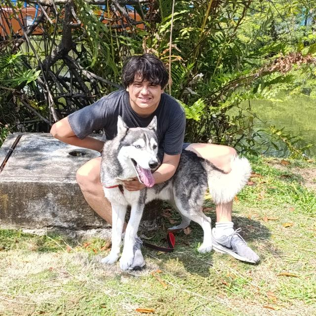

Estudiante de Ingeniería en Ciencias de la Computación | ESPOL
Soy Luis Inga, estudiante de Ingeniería en Ciencias de la Computación en la ESPOL con un fuerte interés en desarrollo de software y sistemas de alto rendimiento. Me especializo en lenguajes como C++, Rust y Go, y disfruto crear soluciones eficientes y robustas en proyectos complejos. Mi objetivo es contribuir a proyectos de software de impacto que requieren un enfoque profundo en eficiencia y optimización.
Desarrollé un E-commerce dedicado al servicio de atencion medica y productos farmaceuticos, con este proyecto se pudo mejorar significativamente la eficiencia en la gestion de los hospitales y/o doctores independientes.
Enfocado en algoritmos, estructuras de datos, sistemas distribuidos y programación de bajo nivel.
Certificación en React y stack MERN
Interprete Hydrogen desarrollado en Golang
Implementación en Rust de un disparador de eventos que permite dotar al programador de crear codigo con eventos en momentos especificos.
Desarrollé un capturador de paquetes escrito en GO para ver y analizar el trafico de la red superficialmente
Email: lui@espol.edu.ec
Teléfono: +593 963 208 498
LinkedIn: linkedin.com/in/luis-inga